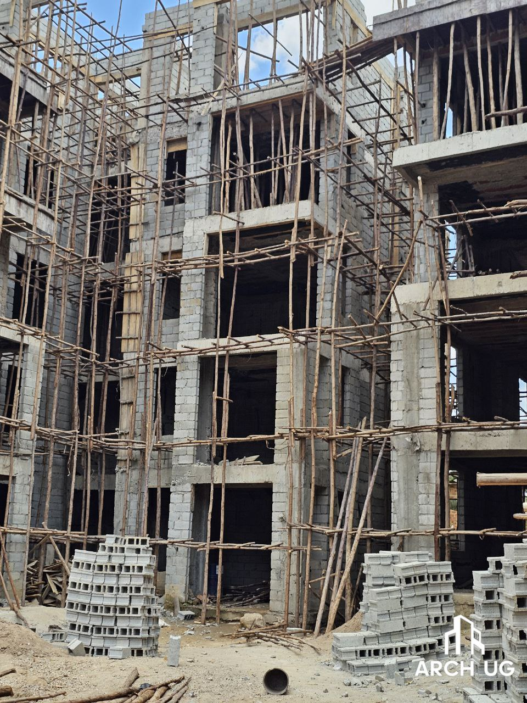

Architecture · Engineering · Insight
By Archineer Uganda LLP · 15th July 2025 · 6 min read

We do not question the roof above our heads. We do not critique the corridor we walk through ten times before noon, the boda stage shade we shelter under when the clouds gather, or the dusty church we attend every Sunday. Architecture is everywhere, yet nowhere in our public conversation. It is as present as air, but just as invisible — until it fails. Unlike music or literature, architecture is not visited. It is lived. Slept in. Mourned in. Voted under. We do not experience buildings for two hours and leave with an opinion. We marry inside them. We give birth in them. We grow numb inside them. And for that very reason — we rarely critique them. Not because we shouldn’t. But because we often can’t.
“Unlike music or literature, architecture is not visited. It is lived. Slept in. Mourned in. Voted under..”
Critiquing a building is not like critiquing a song or a book. Because when you say “This doesn’t work,” someone somewhere hears,“Are you saying I wasted my money?” Or worse, “Are you saying I lack taste?” You walk into a new shopping mall in Kampala. There are escalators that don’t work. Shops that never opened. Tiles that glisten but halls that echo emptiness. You want to say: “This place feels unfinished.” But you stop. Because you weren’t there when the funding stalled. You didn’t see the developer battle with URA, or wait six months for an inspection certificate, or agree to cheaper finishes because the Chinese loan came late. You critique a building from the outside — but it was born on the inside. In Uganda, especially, every building is a battle. A compromise. A personal journey. The man who built his Bugolobi apartment block may have wanted timber eaves, open stairwells, and clay tiles — but ended up with paint and plaster because the rent market demanded it. So when you say, “It looks bland,” you may unknowingly be critiquing survival. And how dare you critique survival?